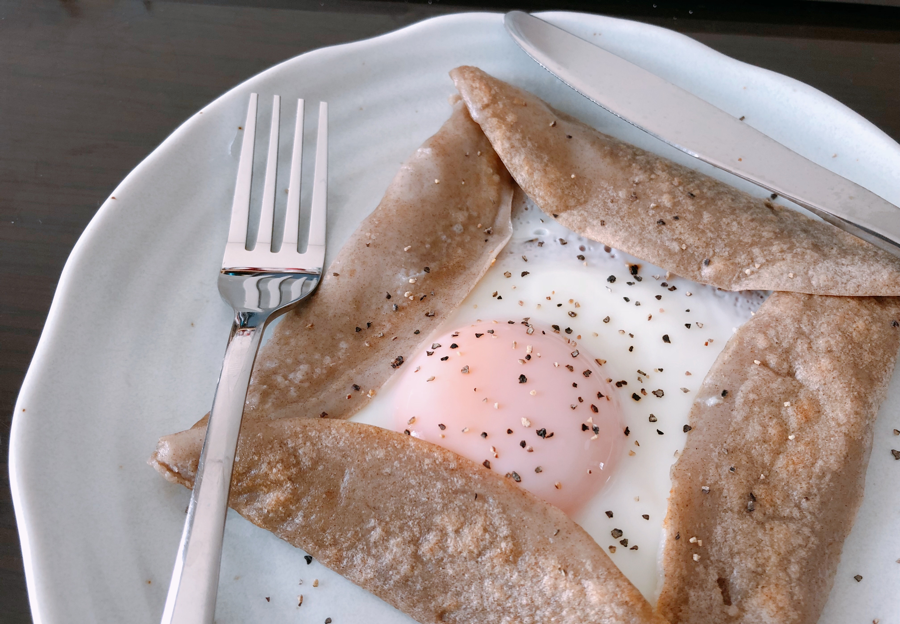
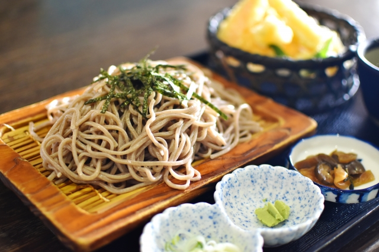

食欲がない朝に！そば粉ガレット

食欲がない、そんな朝に食べるべきは「そば粉ガレット」。そば粉ガレットは、その名前の通り「そば粉」が使われている究極のヘルシー料理。作り方も簡単で手間がかからず、少ない材料で作ることができる節約料理でもある。ヘルシーかつ低コストなメニューなのに、見た目はちょっとオシャレな感じ。忙しくて食欲がない朝でも、この「そば粉ガレット」を食べたら気分もアガるはず！
知っておきたい！そば粉の魅力３つ

- 低GI食品
- 美容効果
- 脂肪燃焼UP
そば粉は、血糖値の急激な上昇を抑え、脂肪を溜めにくい体にしてくれる低GI食品。さらに肌荒れを改善するビタミンB2や抗酸化作用の高いポリフェノールも含まれている。したがって美肌効果も抜群というわけなのだ。そば粉ガレットはヘルシーなくせに美味しく腹持ちが良いので、食欲が湧かない朝に持ってこいのメニューなのである。
作り方 (2人前)
材料
- そば粉 50g
- ハム 4枚
- 卵 2個
- 塩 ひとつまみ
- 水 80cc
完成までのプロセス
① まずボールにそば粉と塩を入れ、水を少しずつ投入しながら玉ができないように上手く混ぜる。よく混ぜたらラップをして冷蔵庫に入れ１時間ほど寝かせる。
② 熱したフライパンにバターをひき、①を入れて薄くのばす。生地の真ん中にハムをのせ、その上に卵を割り落とす。さらにその上にお好みでチーズをかけても良し。
③ 生地が全体的にパリパリとしてきたら皿へ移す。生地の端を折りたたみ、ブラックペッパーやパセリをかけて見た目を整えたら完成！